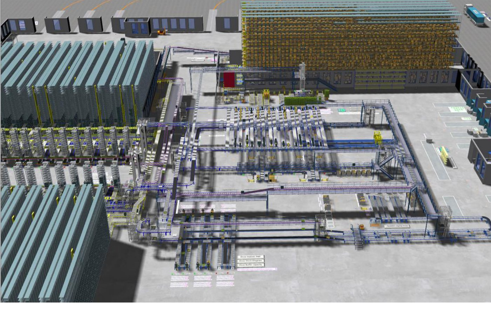

1. Introduction to Plant Simulation
วัตถุประสงค์การเรียนรู้
- เข้าใจว่า Discrete Event Simulation (DES) คืออะไร และต่างจากการคำนวณด้วยมืออย่างไร
- แยก Simulation กับ Digital Twin ได้
- รู้ว่า Plant Simulation ใช้แก้ปัญหาแบบไหนได้บ้างในงานจริง
Discrete Event Simulation (DES)
Plant Simulation จำลองระบบแบบ Discrete Event Simulation (DES) — คือการจำลอง "เหตุการณ์" ที่เกิดขึ้นเป็นจุดๆ ตามเวลา (เช่น ชิ้นงานมาถึง, เครื่องเริ่มทำงาน, เครื่องทำงานเสร็จ) แทนที่จะคำนวณทุกวินาทีต่อเนื่อง ทำให้จำลองกระบวนการผลิตหลายวัน/หลายเดือนได้ในเวลาสั้นกว่าเวลาจริงมากบนคอมพิวเตอร์
- ผังพื้นโรงงาน (เส้นสีเทาจางด้านหลัง) — แบบ Layout จริงที่ใช้เป็นพื้นหลังอ้างอิงตำแหน่งวาง Object
- กลุ่มเครื่องจักรสีเขียว-ฟ้า — แต่ละกลุ่มแทนสถานีเครื่องจักร/ประมวลผลในสายการผลิตจริง
- เส้นสีส้ม — แนวเส้นทางขนส่งภายในโรงงาน
- กลุ่มชั้นวางสีเขียวด้านล่าง — พื้นที่จัดเก็บ/พักชิ้นงาน
Simulation กับ Digital Twin
Simulation คือการสร้างแบบจำลองของระบบหรือกระบวนการในโลกจริงขึ้นมา เพื่อศึกษาพฤติกรรม ทดสอบสมมติฐาน หรือคาดการณ์ผลลัพธ์ภายใต้เงื่อนไขต่างๆ โดยไม่ต้องลงมือทำกับสถานการณ์จริง — เน้นทดสอบ "สิ่งที่อาจจะเกิดขึ้น" (What-if scenarios)
Digital Twin ต่อยอดอีกขั้น: เป็นแบบจำลองที่ เชื่อมโยงกับข้อมูลจริงอย่างต่อเนื่อง ทำให้ติดตามสิ่งที่เป็นอยู่แบบเรียลไทม์ (Real-time monitoring) และพยากรณ์เหตุการณ์ล่วงหน้า (Prediction) ได้ — โมเดลที่เริ่มสร้างในชุดสอนนี้คือจุดตั้งต้น พอต่อเข้ากับข้อมูลจริงจากหน้างานก็ต่อยอดเป็น Digital Twin ได้
ประโยชน์ของ Simulation / Digital Twin
- ลดต้นทุน — ทดสอบและแก้ปัญหาในโลกดิจิทัลก่อนลงทุนจริง
- ทำนายล่วงหน้า — รู้ว่าอะไรจะเสียก่อนที่มันจะเสียจริง
- ตัดสินใจได้ดีขึ้น — มีข้อมูลเรียลไทม์ประกอบการวิเคราะห์
- ออกแบบได้แม่นยำ — จำลองสถานการณ์ได้ไม่จำกัดจำนวนครั้ง

Plant Simulation ใช้ทำอะไรได้บ้าง
| โจทย์ | Plant Simulation ช่วยอะไร |
|---|---|
| ออกแบบสายการผลิตใหม่ | ทดสอบผัง Layout ก่อนลงทุนจริง ลดความเสี่ยงสร้างแล้วใช้ไม่ได้ |
| หาคอขวด (Bottleneck) | ดูว่าเครื่องไหนเป็นตัวถ่วง Throughput ของทั้งสาย |
| วางแผนกำลังการผลิต | ทดลองเพิ่ม/ลดจำนวนเครื่องจักรหรือคนงานแบบ what-if |
| บริหารสินค้าคงคลัง/โลจิสติกส์ | จำลองคลังสินค้า, AGV, ระบบขนส่งภายในโรงงาน |
เริ่มต้นใช้งาน Plant Simulation
หน้าถัดไปเปิดโมเดลตัวอย่าง 3 ตัวที่ติดมากับ Plant Simulation 2606 เพื่อฝึกใช้หน้าจอและเห็นภาพว่าเรียนจบแล้วจะทำอะไรได้ — ยังไม่ต้องสร้างโมเดลเอง:
- Factory 51 — โรงงานตัวอย่าง 3D: หมุน ซูม เปิด Frame ด้านใน และสั่ง Run / Reset
- Small Parts Production — หาคอขวด เพิ่ม Buffer หาขนาดด้วย Experiment Manager และดูพลังงาน
- Python GA Demo — หาค่าที่ดีที่สุดด้วย Genetic Algorithm ที่เขียนด้วย Python
จากนั้นเริ่มสร้างโมเดลเองที่ บท 01 สร้างโมเดลแรก